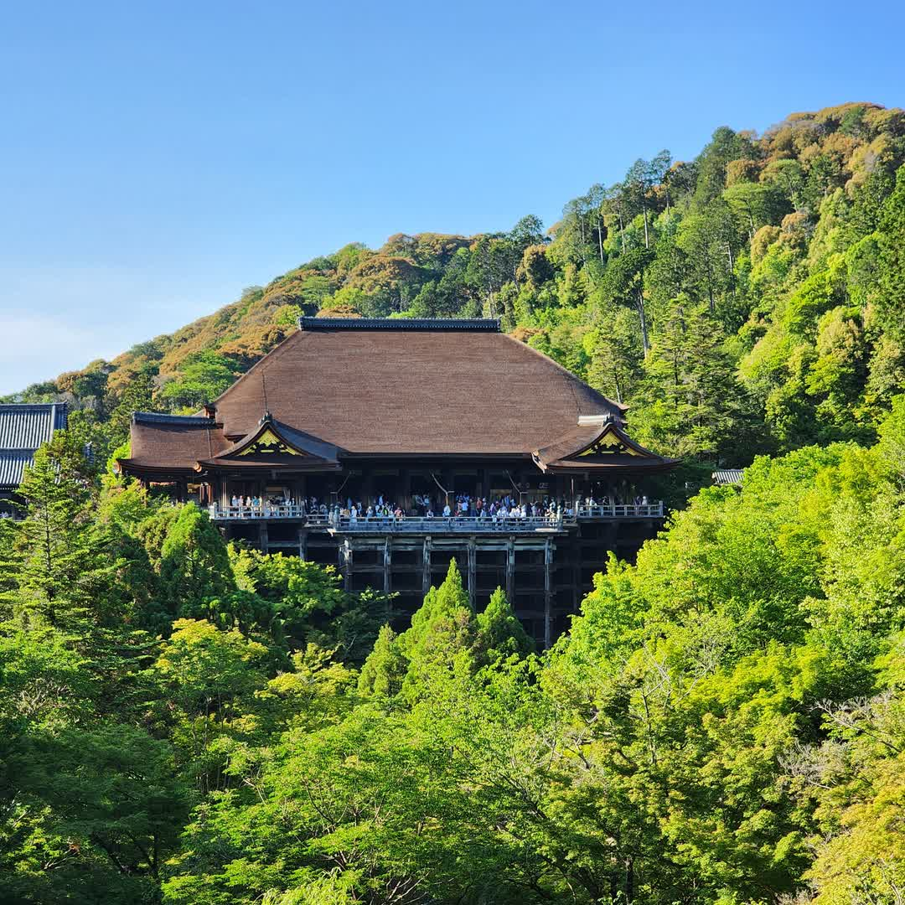
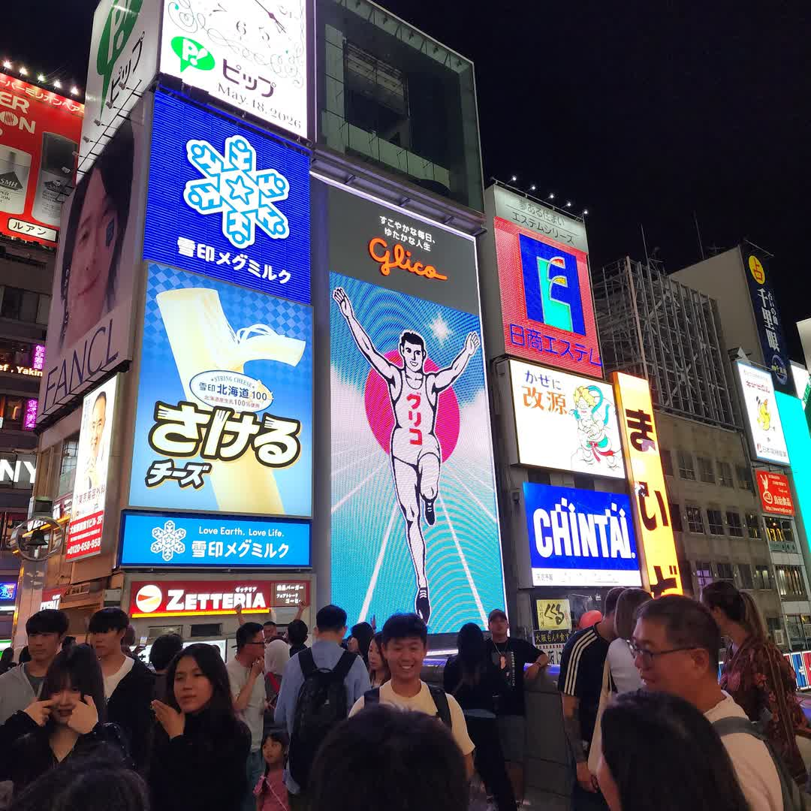

Featured Places
기억에 남은 여행지
각 사진에 마우스를 올리면 이미지가 자연스럽게 확대됩니다.
Travel Soundtrack
여행의 순간을 위한 배경음악
READY
0:00
0:00


Travel Vlog
여행 브이로그
0:00
0:00
VIDEO ARCHIVE
오사카 현지의 타코야키
혼케 오타코 도톤보리 본점에서 타코야키를 맛보았습니다.